新疆大漠孤立无援的时候，居然意外发现一个宝藏
大家好，我是一名报社记者，几年前接到部门领导通知，外派我去新疆当驻地记者，深度报道新疆当地風土人情。
于是我简单收拾行李，和家人告别后，怀着忐忑的心情，風尘仆仆来到新疆，开始了我为期三年的外派工作。
来之前老同事善意提醒我那里环境非常艰苦，不要把身体搞垮了。当地领导也给我提供了最好的住宿条件，但還是叮咛我当地医疗环境很差，要多注意身体。等我真正到达目的地时候，才发现这里环境比想象的還差， 突如其来的沙尘暴、极端的干旱、天氣燥热，没有水源，方圆几公里都荒无人烟，就看到几只骆驼在悠闲的散步， 这样的环境一度使我崩溃！
没想到的是，機缘巧合下，我居然在这里找到一件珍宝......
果不其然，刚来一个礼拜我就感觉水土不服，身体很不舒服！ 恶心吃不下饭，人也消瘦了不少，而且经常便秘，时常胃痛。每天背着采访包就像背着千斤坠一样，浑身没劲。当地老干部看我难受的样子，给我弄了两罐驼奶，要我每天按时喝补充营养。
拿到驼奶感觉很抵触，我平时可是连牛奶都不爱喝的人，但是浓郁的奶味突然吸引了我，喝下去跟想象中不同，微微甜中带咸，像泉水一般甘甜又有很绵长的奶味在口中盘鏇，简直太好喝了！ 奶香在舌尖上翻滚，在口腔中起舞，在喉头聚集，再一股腦的流进胃里，整个人都热乎起来，胃部暖暖的！
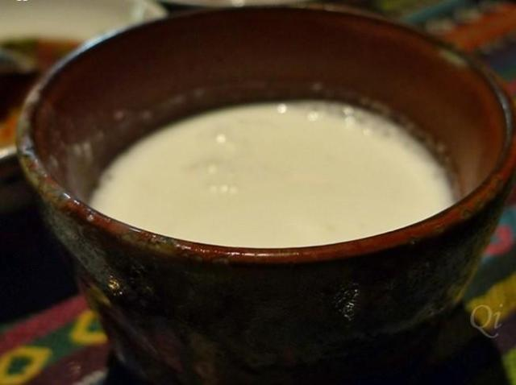
在习惯驼奶的味道后，我试着回忆：那是一种近似母乳的感觉，一度让我想起了我的妈妈。老干部向我介绍：“你们喝的每一口驼奶，都是从小骆驼嘴里抢下来的！” 新疆的饮食习惯和我们内陸区别還挺大的，在这边经常大口吃肉大口喝酒，我身体受不了所以经常习惯性拉肚子，坚持喝了 驼奶后，我的肠胃很快的适应了 当地饮食。
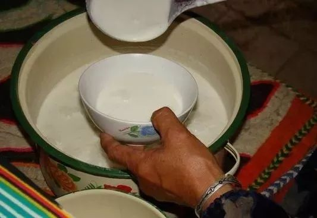
在新疆的这几年没少让家里人担心，他们怕我在这里吃不好睡不好，把身体搞垮了。后来经常和家人视频，大家看到我都说我现在比以往壮实，我自己也觉得身体素质還不错，这几年很少感冒发烧，体力活兒也是不在话下！
更让我惊讶的是，在一次写關于这里医疗条件文章时，竟然意外发现这里有很多身体健康、年龄超过100岁的老人，是著名的“长寿之乡”，中国十大寿星中有一半都来自新疆！
听当地领导说世界最长寿老人也在新疆， 我赶忙打听到老人住所前去拜访。这位百岁老人叫阿丽米罕·色依提，她生于1886年6月25日（光绪12年），现在已经132岁了！
见到阿丽米罕，我不禁感叹这真的是128岁的老人么，吐字清晰，耳朵也灵敏，和我交流没有任何困难。采访时我才知道原来 阿丽米罕不仅是中国而且還是世界上最长寿的老人。怀着好奇的心情，我問老人家长寿秘诀是什么，她笑着告诉我就是一日三餐粗茶淡饭，但是每天都要喝口驼奶！
当地有首歌词是这样写的：70岁的老汉健步如飞，80岁的老妈烹羊烤馕，90岁的夫妻成双成对……”。在新疆有这样的真实场景：120岁的婆婆坐在门前，等100岁的兒媳妇从娘家回来，80岁的孫女一面穿针引线,一面自豪地说：“我還年轻……”。
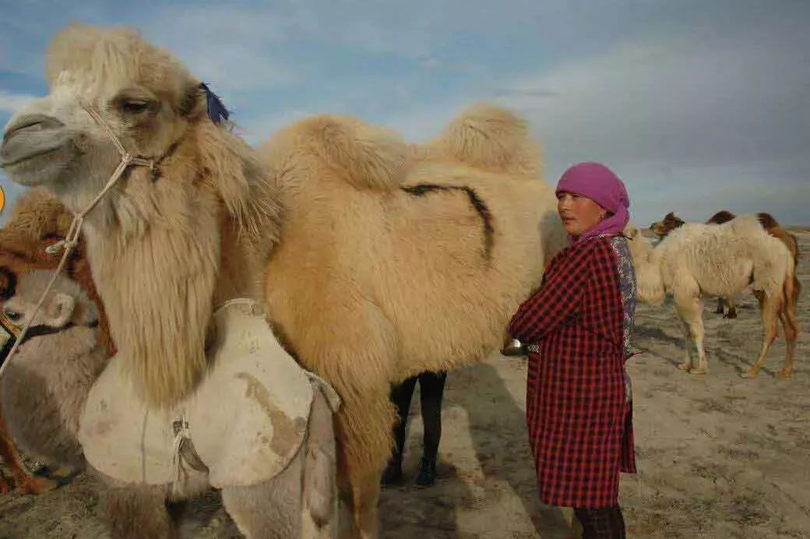
新疆，既没有中原的青山绿水也不如一线城市医疗设施齐全。为什么有如此之多的长寿老人？它究竟有什么魔力呢？经过大范围的调查走访后，我得出一个结论，这些百岁老人除了饮食上较为自然外，与其他地区的老人别无二致。 但是这些百岁老人的日常膳食里面，共性每天喝驼奶占了很大比重。
骆驼，生存在大多数生命都无法生存的沙漠环境中。 就是这样的极端环境它却能不吃不喝存活79天！
哺乳期7天不喝水而奶量不变！失水达到体重30%~40%却毫无生命危险！
在昼夜温差多达几十度的环境繁衍了几十万年！骆驼以天然植物为食，包括 骆驼刺、沙拐枣、盐生草、锁阳、狼毒草。 盐生草、狼毒草，牛、羊和人误食后会中毒，却是骆驼的美食和养料。 骆驼，是生命的奇迹！
高原的融雪带来无比纯净的水源，驼奶纯天然的口感真是源于无污染的高原泉水，，骆驼喝了这样的水才能产出如此甘甜的奶。终年烈日让细菌在紫外线下难以生存，大漠狂風让有害氣体无法侵入！ 骆驼就这样喝着雪山融水，吃着珍惜草药，才能孕育珍贵的“高原驼宝”——驼奶！
据调查骆驼产奶非常少。母骆驼必须嗅到幼骆驼的氣味，才会分泌乳汁。 因此相比牛奶、羊奶，骆驼很难产奶。出于技术难度，牧民们收集到的驼奶，只够自家喝，根本没有多余的奶可以拿出来卖。
听村长说，村里有个小孩5岁的时候不幸患肺炎。原先就营养不良的小孩，一生病就瘦弱不堪，一整天就喜歡卧床睡觉，不起床，也不玩耍。他必须吃清淡的食物，不能吃荤的，而孩子又恰恰是营养不良，需要补充营养，小孩父母心情一团糟不知所措，最后没办法只能给小孩喝骆驼奶，没想到过了一阵子， 小孩不仅病好了，還长胖了！
骆驼奶，对于许多人来说都较为陌生，但在许多国家它已被视为一种不可替代的营养品，被誉为健康 “白金营养”、“生命加油站”。
作为产奶生物，骆驼的寿命比牛、羊等其他动物高几十年！唯一不及牛、羊的就是 产奶量较少，只有不到其十分之一。只有在喂养幼崽时，人们才有機会获得富含“长寿因子”的驼奶，这在盛产骆驼的新疆地区也极其珍贵！
早在很多年前，驼奶的价值就被古人发现了。 据悉，汉代出使西域的特使张骞被匈奴囚禁13年后，在偶然的一次機会中成功出逃，然而茫茫沙漠，杳无人烟缺食少水，未走几天，便昏倒在万里沙海，幸被一位胡人发现，用一碗略显咸涩汤药救活一命，最终成功回到长安。
明代蒙古达延汗曾统一蒙古，幼年时寄养在别家，受尽虐待，身患痞疾，其养母用银碗盛 同样的汤药將其服下治愈。
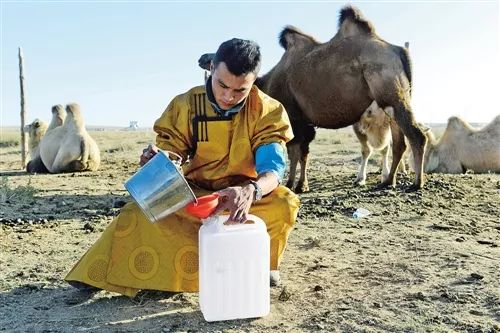
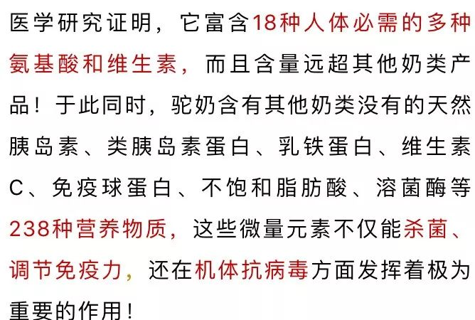
为了更加嚴谨的考察驼奶，我還收集了近年来的许多主流媒体报道，大家也可以看看！这更进一步的证明了驼奶的价值。
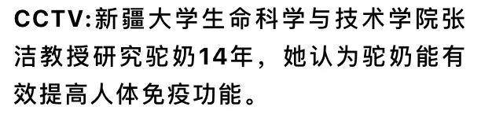
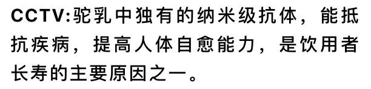
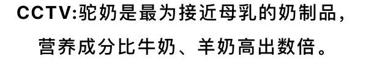
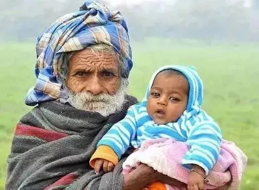
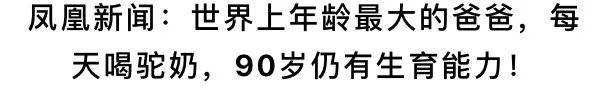

湖南卫视：天天向上节目中，主持人汪涵也盛赞骆驼奶。
经过实地走访、親身体验，科学研究等一系列过程后，我开始着手报道驼奶新闻。作为一名记者，我需要为新疆正宗驼奶正名，也通过宣传让更多的人了解驼奶，让我们中国人有个强健的好身体。
很快消息得到扩散，我在杭州的親人们纷纷给我打電话，让我幫忙寄点驼奶，我也非常乐于做这件事，一来幫助当地牧民扩开销路，二来也是为了家人健康着想。
寄往家中的驼奶粉
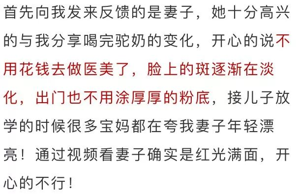
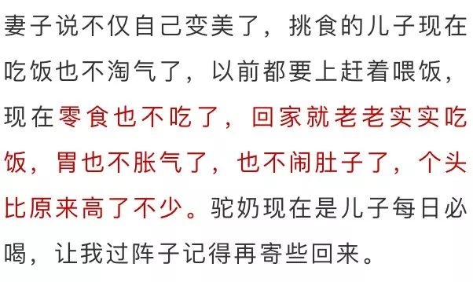
注：根据世界卫生组织建议，宝宝在0-6个月内应该吃母乳或以其他奶为基础做的配方奶粉。因为对婴儿来说，骆驼奶（也包括牛奶、羊奶等其他动物奶）并不是可直接食用的食品。因为他们都与母乳成分有很大的差别，都是不可以直接给婴儿吃的。所以在此建议不要给三岁以下小孩喝骆驼等其他动物奶。
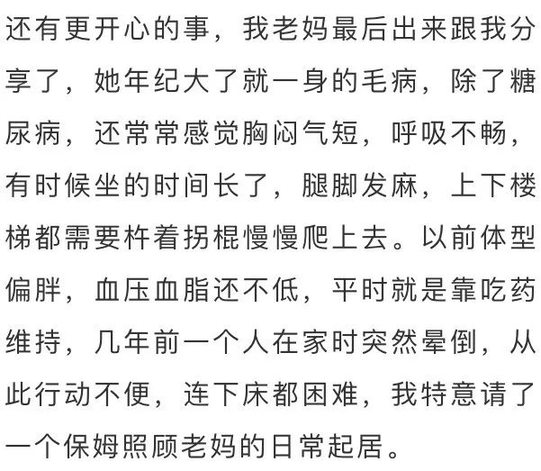
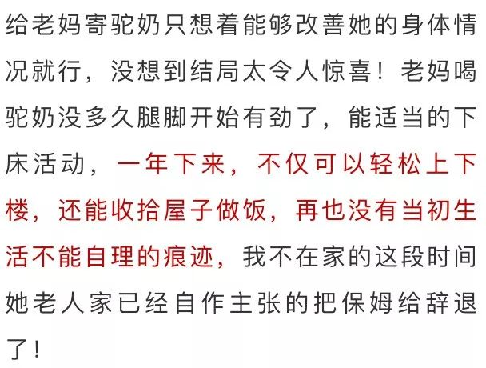
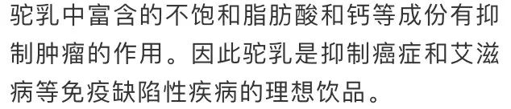
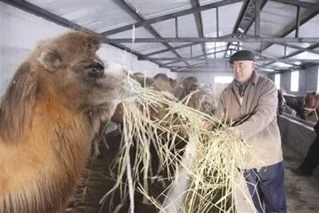
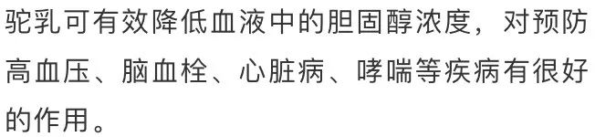
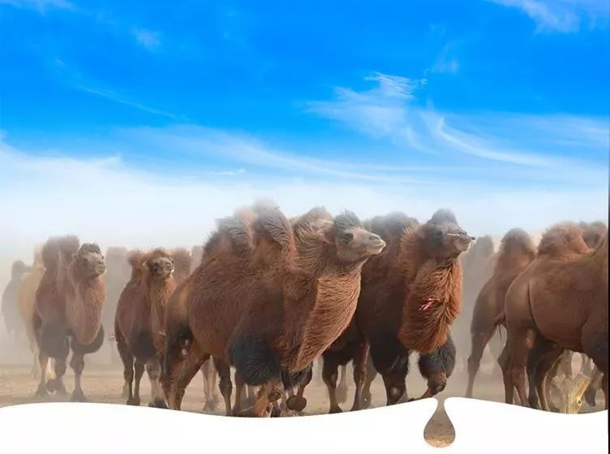
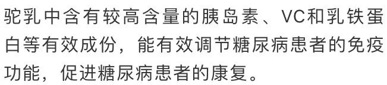
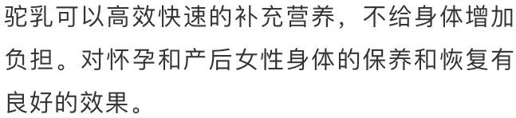
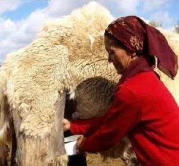
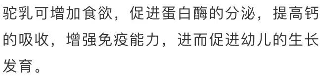
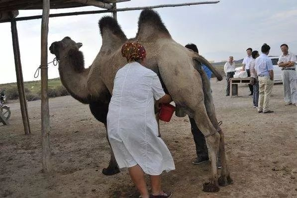
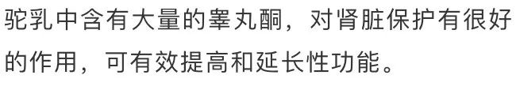
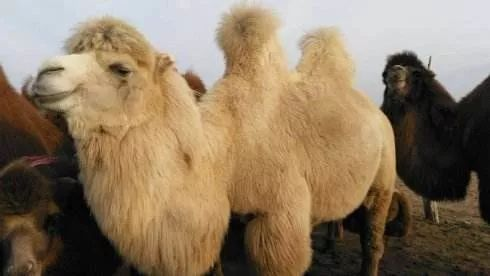
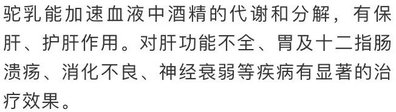
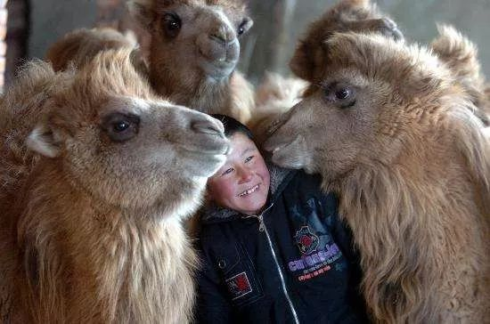
女人喝了驼奶以后
没斑没皱看着都年轻
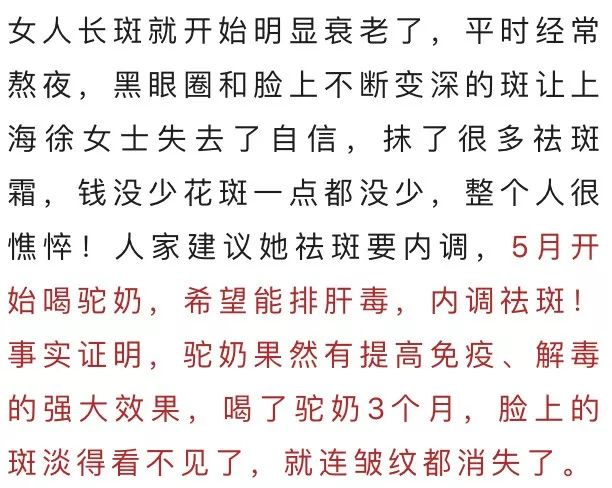
男人喝了驼奶以后
腰不酸不乏，夫妻生活又和谐了
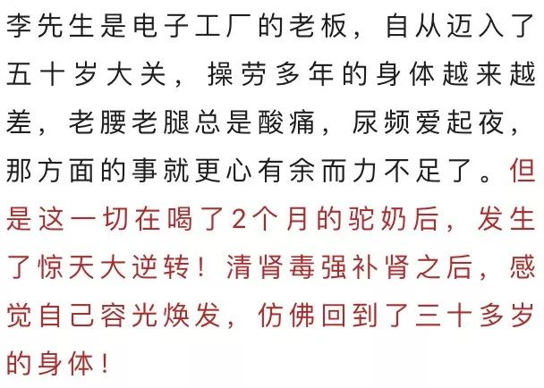
卡拉曼告诉我，近年来驼奶市场鱼龙混杂，很多人买到假驼奶然后说驼奶不好，辨别真假驼奶的方法其实很简单！
我们的驼奶尝起来会感觉口感清爽细腻，稍稍粘住你的牙齿和舌尖，有 微微的食物清甜，味道还会有一点淡淡的咸味，这是驼奶的特色，每次喝完都感觉唇齿留香。
咱们的骆奶闻起来会有淡淡的乳香味，清淡不浓郁。如果哪里的驼奶闻起来奶香很浓郁，这种一定不要喝，它都是由各种添加剂调配出来的，并不是优质奶原有的味道。
咱那拉丝醇有一大标志性的特点，那便是每次你喝的时候会发现在 碗壁或者杯壁上附有一层粉质小颗粒， 这些小颗粒就是驼奶中的精华了，它们是蛋白质、脂肪等营养物质。 正是因此我们奶质才会如此醇厚。
万万没想到，驼奶不仅在中国火，在国外更火。经过调查发现，在国际视野中，骆驼奶一直是不可取代的饮食瑰宝。
在中东地区以及欧洲，骆驼奶早已是高端人群的主要饮品，在王室贵族中盛行。 据报道，很多阿拉伯世界领导人和穆斯林精神领袖就只喝矿泉水和骆驼奶，而不喝其他任何饮品。
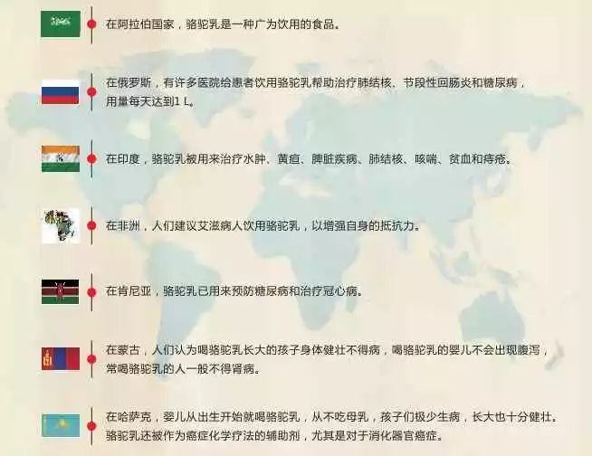
驼奶虽然作用神奇，但产量不足一直是个大问题，我希望驼乳能走出大漠，像牛奶一样走进千家万户的餐桌上。
随着越来越多国家对驼奶的重视，大量的驼乳被外企抢购一空，驼乳资源已经有供不应求的趋势。而对驼乳需求量最大的，恰恰是拥有15亿人口的中国！
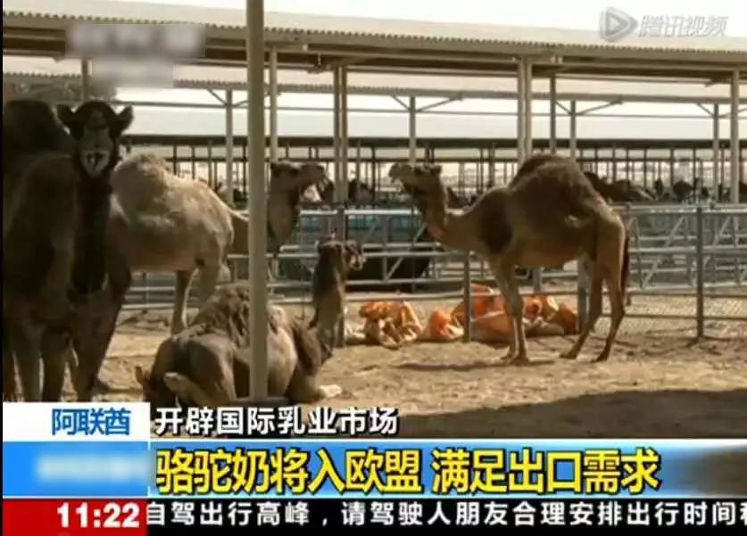
面对这一现状，中国驼奶领域并没有坐以待毙。他们为了保障我国同胞能够享受到珍惜的驼乳资源，在响应联合国关于驼奶全球普及议案和国家“一带一路”发展战略下，一批一带一路重点项目企业在全球四十多个贫困国家和地区开展援助帮扶项目。并设立国民限援办公室，执行——公民“限时援助”计划！
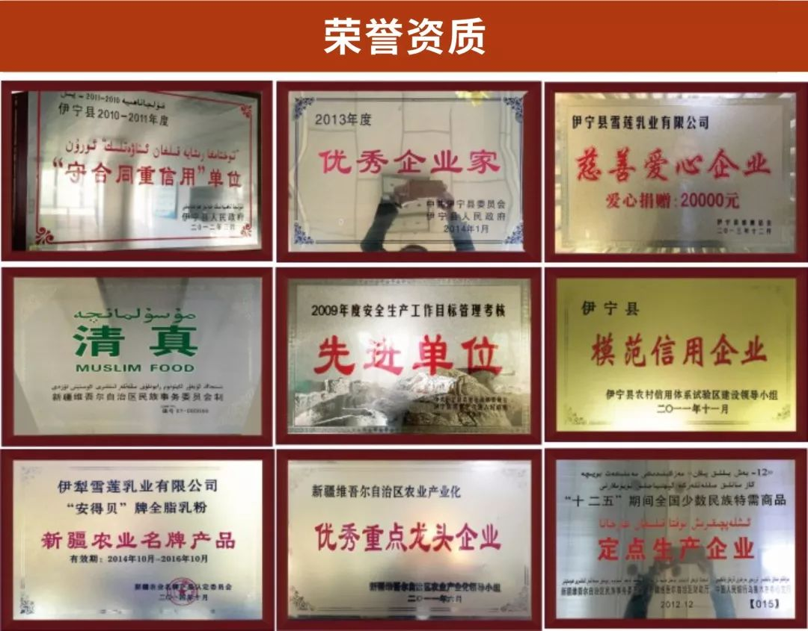

新疆驼奶国际帮扶项目——
中国区公民“限时援助”计划
![]() 点击添加微信，咨询详情
点击添加微信，咨询详情